Graph Engineering 是什么？一文讲透多 Agent 图式编排
大家好，我是小林。
还记得吗？上个月才刚出 loop engineering 这个新词，我当时还写了一篇「图解 loop engineering」的文章。
结果 AI 工程讨论里又出现了一个较新的说法，叫「graph engineering」。它更像对图式编排实践的概括，不是所有框架都采用的正式标准或独立产品类别。
事情的起因是，前几天 OpenClaw 小龙虾创始人说了一句「我们还在聊 loop，还是已经切到 graph 了？」
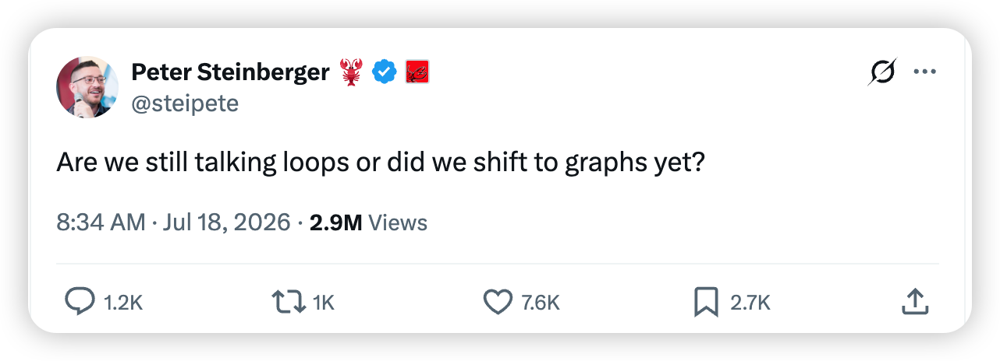
然后就有其他大佬直接跟帖喊了一句「loop engineering 已死，graph engineering 永生！」
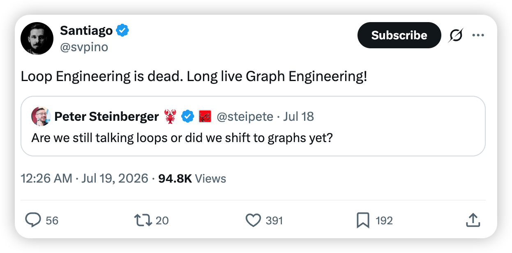
这类术语常由社区文章、访谈或社交媒体传播，时间和出处应以原文为准；面试回答时不要把口号当成协议或框架事实。
此时此刻，我的心情如下，真累了，快追不动了，别造新词了好嘛。
所以我悟了，在 AI 圈，只要学得足够慢，就可以不用学了。
话虽如此，graph engineering 到底是啥牛鬼蛇神，今天还是来聊一聊。
什么是 Graph Engineering？
先说清楚一个词。graph 直译过来是「图」，是数据结构里「节点加连线」的那个图，节点叫 Node，节点之间的那根连线叫边（Edge），下面我统一写 graph。
graph engineering 是在干嘛呢？你想想自己公司是怎么运转的，就好理解了。
一家公司不会让一个人从头到尾包办调研、开发、测试、上线，哪怕这个人是全才也不行。公司的做法是拆分职责，每个人负责一个环节。有些环节必须等上一步完成后才能开始，有些环节则可以同时推进。哪个环节出了问题，也能很快定位到对应的负责人。
复杂任务也是一样。它通常包含多个步骤，有的存在先后依赖，有的互不影响，可以并行执行。
graph engineering 可以理解为：按照任务依赖关系，用有向图编排流程，该串行的串行、可安全并行的并行，并让每个节点有明确输入、输出、权限和验收条件。它既可以编排 Agent，也可以编排普通代码、人工审批或外部服务。
说白了，它不是发明了什么新玩法。它是提醒你，别再把一件本来可以并行、分支执行的任务，强行改成全程串行执行。
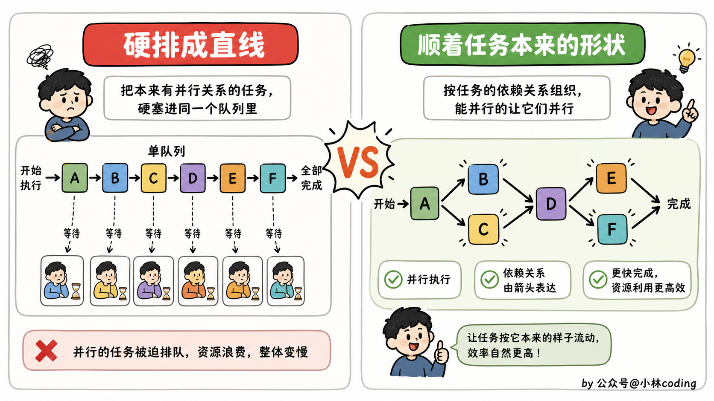
讲到这，有的同学就会问了，那 loop 被淘汰了？
别慌，二者可以组合。可以把 loop 看成带回边的特殊流程图，但“一个节点一条自环”只是帮助理解的抽象，不是所有 loop 或 graph 实现的形式化定义。图式编排关注节点之间的依赖、状态和控制流，节点内部是否使用 Agent loop 则由实现决定。
所以这俩根本不冲突。loop engineering 解决的是单个 agent 如何反复思考、调用工具和修正结果，graph engineering 解决的是多个执行单元如何拆分、并行、汇合和返工。简单说，前者管节点内部，后者管节点之间。
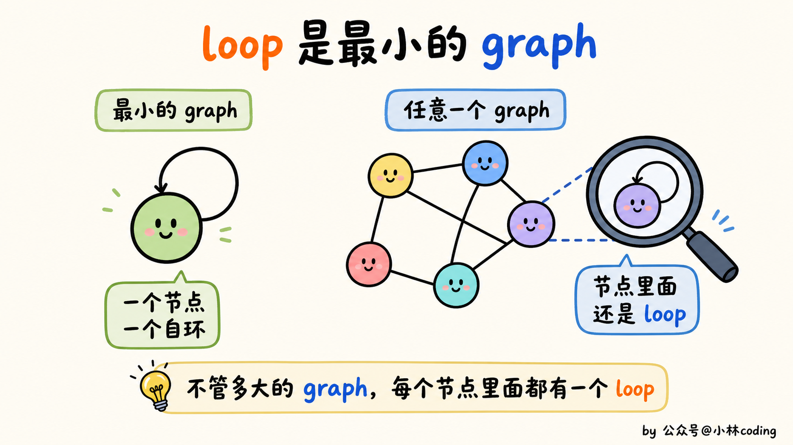
可能又有的同学就问了，任务之间的依赖关系我懂了，可我就在一个对话里，让同一个 agent 一步一步做，不也能做完吗？
能是能，但如果只是让一个 agent 在一段长对话里从头跑到尾，把一件本来可以并行、分支执行的任务改成全程串行执行，就会撞上几个躲不掉的麻烦。平时做点小任务没事，任务一放大，马上全冒出来。
先说最直接的，慢。全程串行执行，就只能一步一步来，明明后端、前端、测试能三路一起跑，也得排着队一个干完再干下一个。
再一个，如果没有额外设计状态和存档机制，这种串行流程跑下来，全部家当就只剩一长串聊天记录。执行到第 40 步突然中断怎么办？要么从头重跑，要么你自己钻进上下文里一点点翻，看看还能抢救出什么。
暂停也麻烦。这种从头跑到尾的执行方式，如果没有额外保存进度，中间很难停下来等人工审批，隔天再从断点接着干。要么一直耗着，要么中断后重新来。
最要命的是，单个 agent 串行执行很难表达复杂分工。
你想要「一个负责规划的，带三个干活的，再来一个专门挑刺的」，这个念头一冒出来，串行流程就开始吃力了。它擅长回答「下一步做什么」，却不擅长同时表达「谁来做、哪几个人一起做、做完在哪里汇合」。
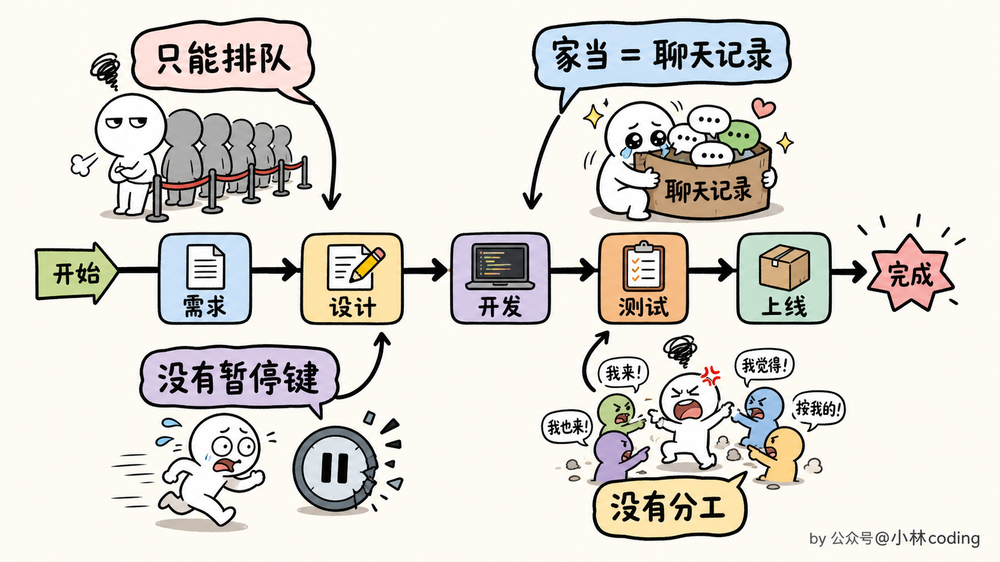
我看到一个说法特别贴切，这么跑任务，就像系统有很强的执行能力，却没有统一调度，每次只能处理一件事，完成后才能进入下一件。
说白了，它缺的不是脑子，而是任务调度和流程管理能力，把任务分给多个 agent 同时执行、记录每一步的进度、执行中断后还能恢复。
这两年模型完成单个步骤已经越来越可靠，真正容易翻车的，是「一百个步骤怎么协作起来」，而 graph engineering 补上的，就是这层任务调度和流程管理能力。
Graph Engineering 的工作原理是什么？
其实，一张 graph 拆开就三样东西，节点（Node）、边（Edge）、状态（State）。
graph 工程的工作原理全藏在这三样里，我们一个个说。
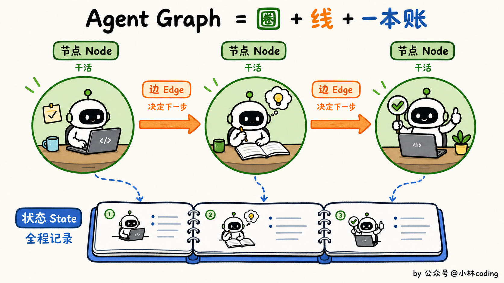
第一样，节点（Node），就是干活的那个。
一个节点可以是一个跑着完整思考循环的 agent，也可以是一段按照固定规则运行的普通代码，或者一次数据库查询。甚至，人也行。对，人也是节点，审批这个环节就是一个人类节点：前面的任务流进来，你做出决定，后面的任务再继续往下走。
好节点的标准是职责、输入输出和副作用边界清晰，能够单独测试并被替换；一个节点可以内部包含多个步骤，但应避免把不可观测的巨大 loop 伪装成黑盒。
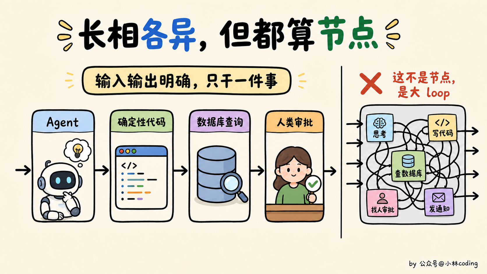
第二样，边（Edge），负责决定下一步执行哪个节点。
设计一条边（Edge），其实是在回答两个问题：下一个节点由什么决定，以及是否要根据结果选择不同分支。
先看由什么决定下一个节点。
可以由提前写进代码的固定规则决定，这叫确定性边（Deterministic Edge），比如测试全部通过就进入部署，根本用不着模型掺和。
也可以交给模型判断，这叫模型决策边（Model-decided Edge），比如一个工单进来，该派给处理退款的节点还是处理投诉的节点。
设计的功夫就在分清哪条边（Edge）该写死、哪条该交给模型。能写死的尽量写死，把模型的判断能力留给少数确实需要理解语义的分支。
再看流程是不是固定的。固定流程总是进入同一个节点，条件边（Conditional Edge）则会根据上一步的结果分叉，比如测试通过就进入下一个节点，测试失败就返回返工节点。
所以，条件边和前面两种不是并列关系。一条条件边既可以由代码判断，也可以由模型判断。比如「测试通过就审批，失败就返工」，是一条由代码判断的条件边；「根据工单内容分到退款或投诉节点」，则是一条由模型判断的条件边。
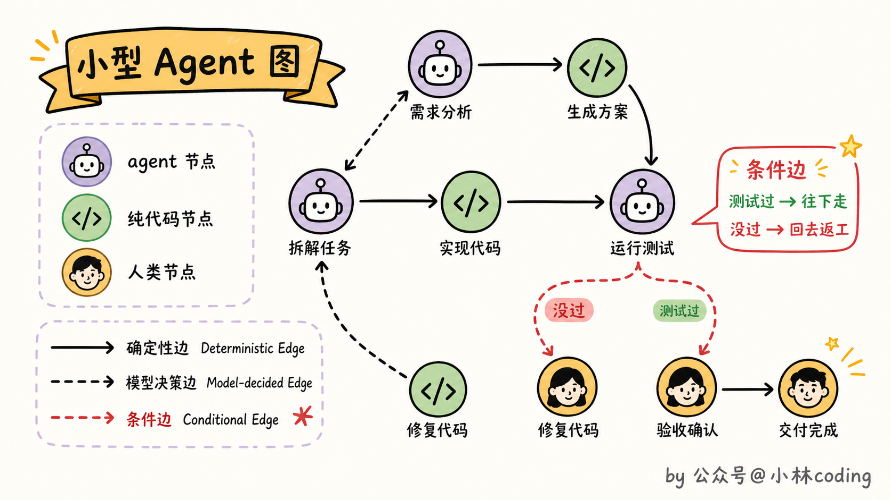
第三样，状态（State），一个字段结构固定的对象。
任务按照 graph 定义的顺序依次经过各个节点，执行到哪、每一步产出了什么、消耗了多少 token，这些信息总得有个地方存着。这个地方就是状态。你可以把它理解成一张字段固定的任务进度表，也可以把它理解成一份结构化的 JSON：
{
"backend": {"status": "done", "artifact": "api/export.js"},
"frontend": {"status": "running"},
"tests": {"status": "pending"},
"tokens_used": 12000
}
谁要看进度，读这个对象就行，不用再钻进一大段聊天记录里翻。
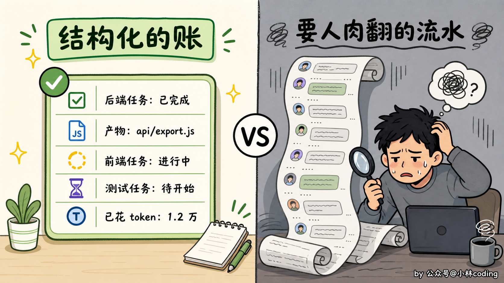
工程实现时，通常会在一个节点执行完成后，把最新状态保存下来，相当于存一次档。
当然，用 graph 来编排任务，并不会自动存档。还得靠运行框架，或者你自己把状态写进数据库、文件这些地方。
有了存档，流程中断就完全不是一回事了。以前中断叫「这一趟白跑了」，现在中断叫「读档，重试那一个节点」。打游戏你就懂，没有存档点的游戏，死一次回出生点，谁受得了。
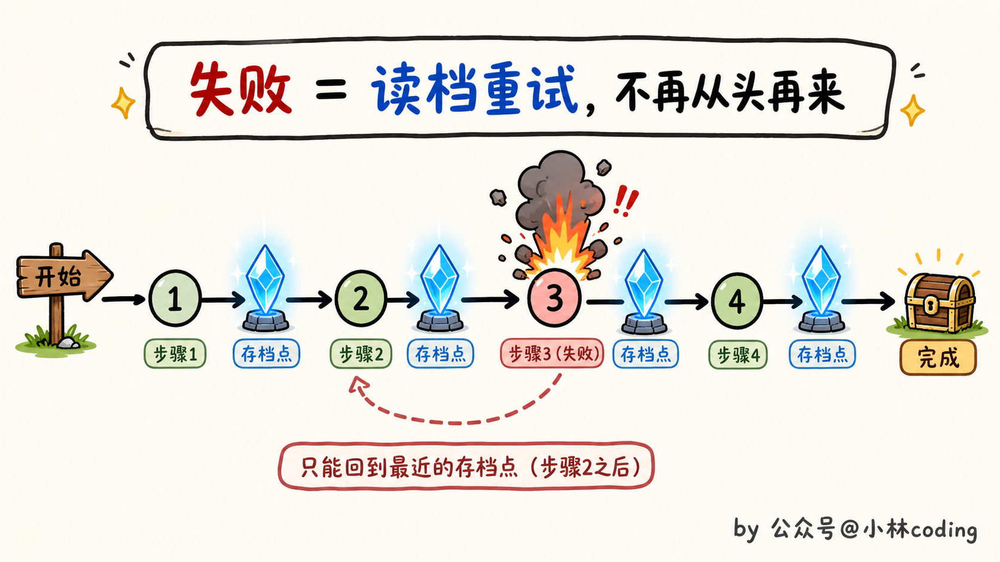
说到底就是，节点（Node）负责干活，边（Edge）负责决定控制流，状态（State）负责记录进度、输入、产物和错误；持久化、恢复和回滚还需要运行时存储与策略配合，每个节点完成后不一定都能安全地“读档重试”。
三样凑齐，前面说的那些问题也就分别有了解法。
- 想并行？让一个节点同时分出三条边（Edge），启动三个节点，这个动作叫分支并行（fan-out），干完再汇合（fan-in）。
- 想暂停等审批？在流程中增加一个等待人工确认的节点。
- 想执行中断后还能接着跑？可以从最近的一致状态恢复，但要检查外部副作用是否已经发生，必要时使用幂等键、去重或补偿动作。
对了，图的状态还是个结构化的对象，每个节点的产出、测试结果、消耗的 token 都是一个个明确的字段。正因为它结构化、程序能直接读，前面说的存档和返工才转得起来。条件判断读取测试结果字段后，就知道该继续执行还是返回返工节点。
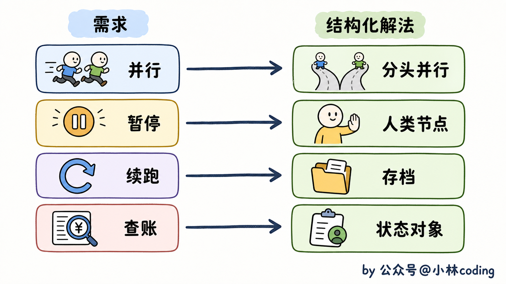
Graph Engineering 怎么上手实操？
真的需要用 graph 来编排吗？
动手之前先泼一盆冷水，你手上大部分的任务，按照顺序执行就够了，犯不着专门用 graph 来编排整个流程。
写个脚本、修个 bug、做个简单调研，这些任务的前后步骤很明确，按照顺序执行就行，强行用 graph 来编排纯属给自己找罪受。一个人一下午能干完的任务，没必要开项目启动会。
什么样的任务适合用 graph 来编排？我总结下来是这么几个。
- 任务能拆成互相独立的子任务，而且需要缩短总耗时，不能全部串行执行
- 不同环节需要不同的模型、工具、权限，比如干活的节点可写、审查的节点只读
- 流程中间有必须人工确认的环节，上线前必须有人点头
- 任务执行时间长、分支多，你需要随时查看每个分支的进度、产物和 token 消耗，而不是翻一长串聊天记录
一条都不符合，继续采用串行流程就行。符合两三条，再往下看。
对了，还有个前提。先确保每个节点都能稳定完成一件事，再谈怎么把多个节点编排到一起，顺序不能反。
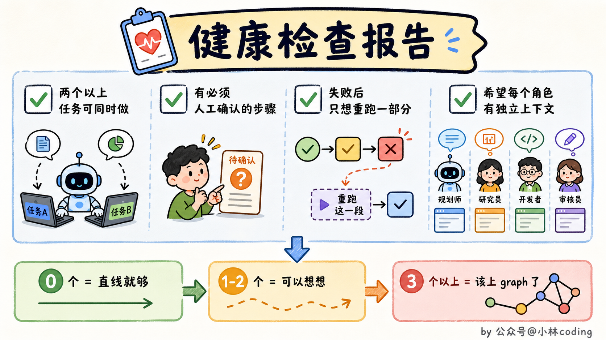
怎样用 graph 编排一个开发需求？
好，假设你的任务符合其中两三条。拿个开发场景走一遍你就明白了。
你接了个需求，给系统加一个数据导出功能。后端要写导出接口，前端要加导出按钮和进度条，测试要补对应的用例。只要先约定好同一份 API 契约，三块任务就可以各自开工，最后再合到一起验收。
要是采用串行方式处理，就得先写后端，再写前端，再补测试。中间哪一步引入的问题，都会继续影响后面的环节，越到后面越乱。
改用 graph 来编排，思路完全不一样。
第一个节点是规划节点，把需求拆成后端、前端、测试三份任务，同时确定一份三方共用的 API 契约，再一起写进状态对象。这一步用模型，因为拆任务和制定契约都需要判断。
然后进入并行分支，三个开发节点同时启动，各自在独立的 git worktree 里干活，互相不碰对方的文件。每个节点内部就是一个标准的编码 loop，领任务、写代码、自测、提交。
三个分支完成后，汇合到集成节点，合并三个分支，跑全量测试。
接下来是条件边（Conditional Edge），也是我觉得整个设计里最妙的地方。测试全部通过，继续往下执行。测试失败，就看是哪个模块的用例没有通过，把状态对象里对应的任务标记成返工，再交回那个开发节点重做。
注意，通常可以只返工失败分支，但如果契约、共享状态或集成结果发生变化，其他分支也可能失效；是否复用产物必须由依赖、版本和测试结果决定。
测试全部通过之后，流程停在最后一个节点上，等待人工确认。这个节点不执行自动化任务，而是暂停流程，等待你本人确认。
你看一眼 diff，点个头，graph 才走完最后一条边（Edge），合入主干。
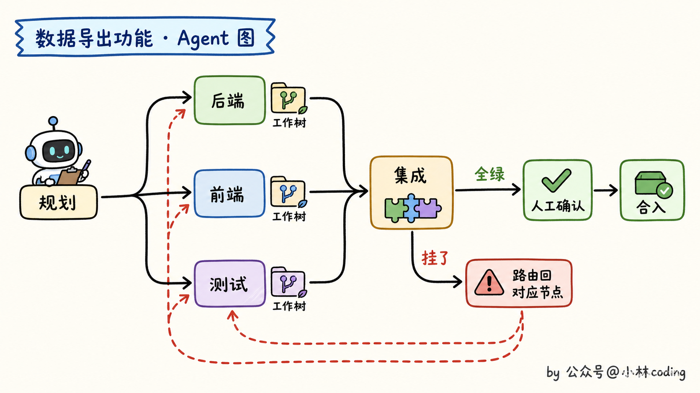
整个过程里，状态对象会持续记录三份任务、每一路的进度和产物路径、测试结果，以及消耗了多少 token。任何时刻你想知道进展，看状态对象就行，不用翻任何聊天记录。
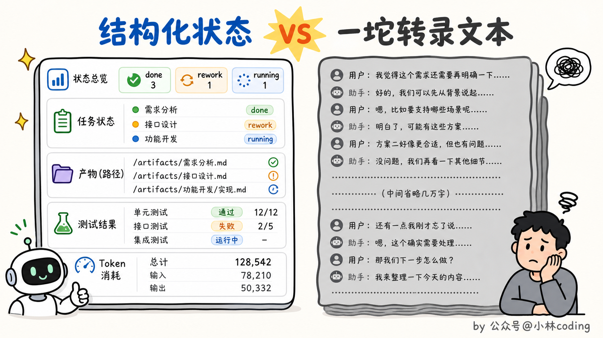
用 LangGraph 怎么写？
用 LangGraph 实现前面的开发流程，最重要的不是记住每个 API，而是看懂节点之间怎么连接。
图式编排的可靠性边界可以用这条链检查：
flowchart LR
P[规划/契约] --> F[Fan-out 并行分支]
F --> V[节点校验与产物]
V --> J{汇合与一致性检查}
J -->|失败且可重试| R[分类错误/退避/返工]
R --> V
J -->|需要副作用| H[人工审批/权限闸门]
H -->|通过| E[幂等执行]
H -->|拒绝| X[取消/补偿]
E --> O[观测、持久化、交付]
O --> S[停止条件]| 设计问题 | 需要明确的边界 | 常见失败 |
|---|---|---|
| 状态 | schema、版本、持久化点、敏感字段 | 状态与真实副作用不一致 |
| 并行 | 共享资源、写冲突、合并规则 | 竞态、重复写、产物互相覆盖 |
| 重试 | 可重试错误、退避、幂等键、最大次数 | 把超时或业务拒绝无限重试 |
| 人工节点 | 谁审批、审批看到什么、超时如何处理 | 审批绕过或长期挂起 |
| 观测 | trace、节点输入输出摘要、成本、错误 | 只看最终答案无法定位故障 |
下面这段代码省略了每个节点内部的具体实现，只保留整张 graph 的骨架。
代码是概念示意：LangGraph 的类名、状态定义、并行边和检查点配置会随版本变化，实际项目应按目标版本文档补齐 schema、持久化、并发限制和错误处理。
from langgraph.graph import StateGraph, START, END
g = StateGraph(DevState)
# 注册节点
g.add_node("plan", plan_task)
g.add_node("backend", backend_dev)
g.add_node("frontend", frontend_dev)
g.add_node("tests", test_dev)
g.add_node("integrate", integrate_code)
g.add_node("rework", rework_code)
g.add_node("approval", human_approval)
# 从规划节点开始
g.add_edge(START, "plan")
# 规划完成后，三个节点并行执行
g.add_edge("plan", "backend")
g.add_edge("plan", "frontend")
g.add_edge("plan", "tests")
# 三个节点都完成后，再进入集成节点
g.add_edge(
["backend", "frontend", "tests"],
"integrate"
)
# 根据测试结果决定下一步
g.add_conditional_edges(
"integrate",
check_tests,
{
"pass": "approval",
"fail": "rework"
}
)
# 返工完成后重新集成
g.add_edge("rework", "integrate")
# 人工确认后结束
g.add_edge("approval", END)
app = g.compile()
先看第一行，StateGraph(DevState) 创建了一张 graph，DevState 就是前面讲过的状态对象。每个节点都可以读取它，也可以把自己的执行结果写回去。
接下来的 add_node 是把规划、后端、前端、测试、集成、返工和人工确认注册成节点。节点内部可以是一段普通代码，也可以是一个完整的 agent。
从 START 进入规划节点后，流程会同时启动后端、前端和测试三个节点。add_edge(["backend", "frontend", "tests"], "integrate") 表示必须等三个节点都完成，才能进入集成节点。
集成完成后，add_conditional_edges 会读取测试结果。测试通过就进入人工确认节点，测试失败就进入返工节点。返工完成后重新回到集成节点，再跑一次测试。
最后的 compile() 会把前面注册的节点和边组装成一张可以执行的 graph。
这样一来，代码和前面的开发流程就能一一对应。规划、并行开发、汇合集成、失败返工和人工确认，在代码里都能直接找到。
用 Claude Code 怎么玩？
看到这估计有同学就问了，我平时用的是 Claude Code，不想专门学 LangGraph，能不能实操 graph engineering？
能，但具体能力取决于 Claude Code 的版本、订阅和配置。它提供的 subagent、hook、MCP、脚本或其他编排能力，可以被组合成图式流程；“workflow”是否是当前版本的正式功能名，应以目标版本文档为准。
一次 subagent 执行可以充当一个节点。在 .claude/agents/ 目录下，一个 md 文件定义一个专职 agent，各自写清楚职责、能用哪些工具、用哪个模型。干活的给写权限，审查的只给只读。
hook 可以在特定生命周期事件触发固定检查，但 hook 的失败语义、可用事件和权限范围取决于实现。测试失败后是阻断、返工还是交给人工，应该由显式状态和停止条件决定，不能让 hook 隐式开启无限修改。
那 graph 本身呢？如果当前版本提供 workflow/任务编排能力，可以把它理解成负责拆任务、派 agent、等待结果和处理分支的调度层；否则也可以用脚本、队列或外部工作流引擎实现。无论哪种方式，都要在执行前审查计划、权限和副作用。
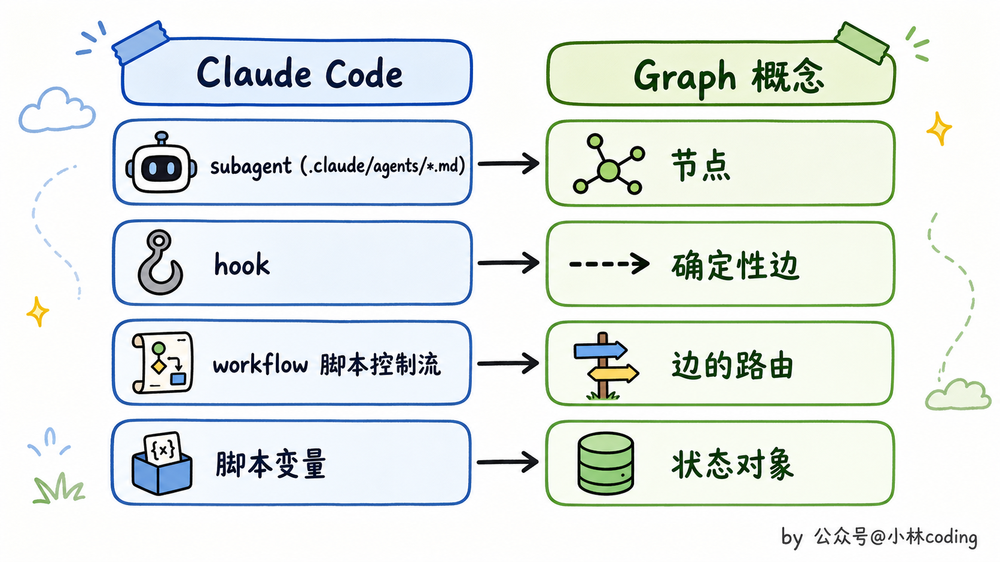
也就是说，脚本不用你动手，你要做的就是在对话框里把目标讲清楚，比如这样一句话。
用 workflow 帮我开发一个记账网站，拆成后端接口、前端页面、测试用例三块并行开发，做完合并跑全量测试，测试全部通过后叫我确认
这类请求的一个示例流程是：先展示拆分计划和 API 契约，再并行执行，最后合并和验收；并行前仍要确认工作区隔离、写权限和共享接口。
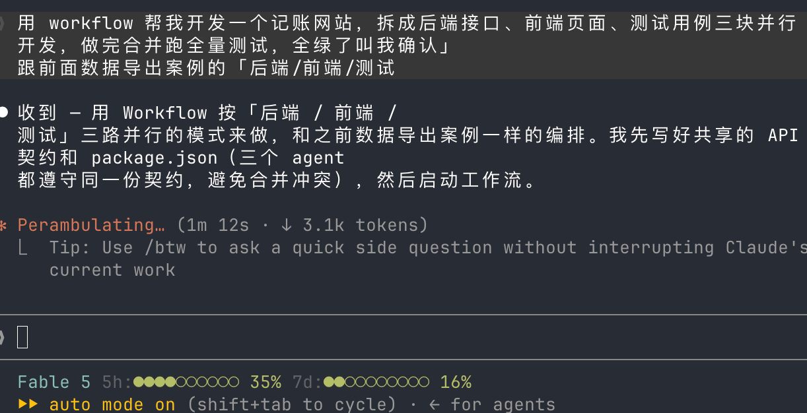
接着它把整个 workflow 的编排方案展示出来等我确认。整个流程分成两个阶段，第一阶段由三个 agent 并行开发，第二阶段负责集成和测试。
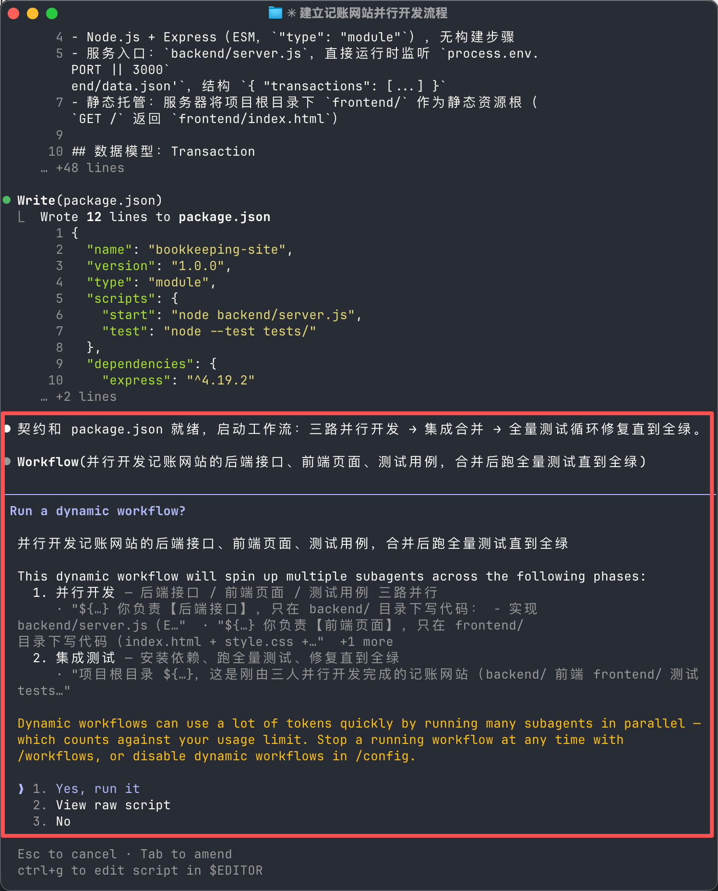
确认方案后，调度层才应启动后台任务；真实运行是否后台化、是否可断点恢复，要看当前实现。
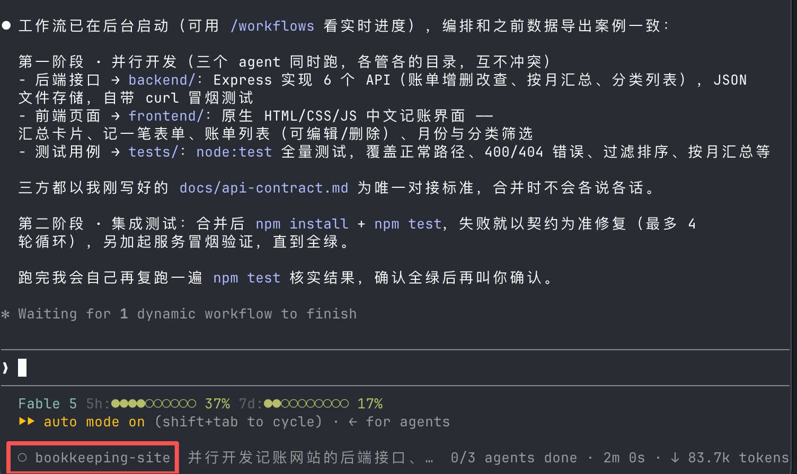
如果当前版本提供相应的任务查看命令，可以用它检查各分支的状态、成本和错误；否则应通过日志、trace 或外部任务面板观测。不能假定所有版本都有同名命令。
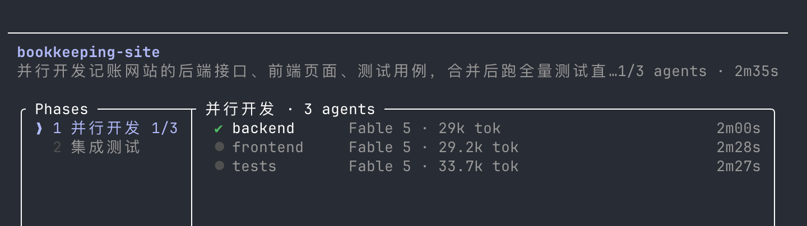
示例中，调度层报告测试通过后仍应由人查看 diff、测试输出和运行效果；模型报告“通过”不等于独立验证已经完成。
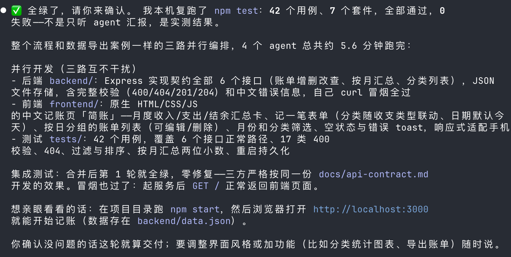
效果是这样的，整体确实不错，能直接用起来，页面也设计得挺像样。
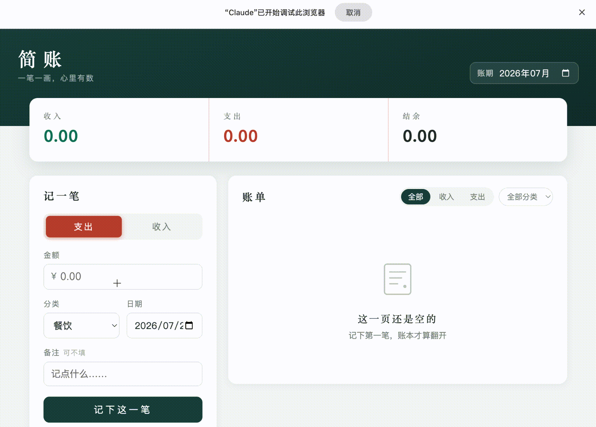
最后我回复它「没问题」，这一轮协作就算交付完成了。注意这最后一步，就是前面说的人类节点。我确认之后，流程才通过最后一条边（Edge），把代码合入主干。
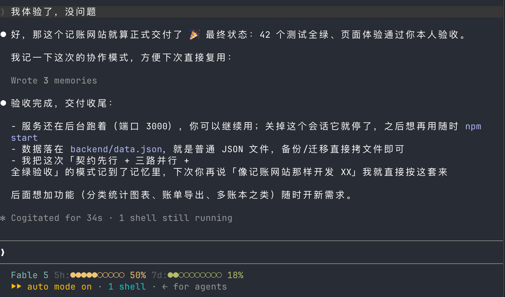
同样的图式思想也可以用于深度调研：拆解、搜索、抓取、交叉验证、综合是常见阶段。某个产品是否内置 /deep-research 或类似命令属于版本/产品功能，不能作为 Claude Code 的通用保证。
比如你想追一追最近模型圈的动态，可以这么问。
/deep-research 最近一个月国内和海外大模型的重要动态，国内重点看 DeepSeek、通义千问、Kimi 这些，海外重点看 OpenAI、Anthropic、Google，按重要程度排序，标注信源
这个调研任务很适合拆成多个方向并行搜索，我也实际跑了一次。它接到后先把这次调研拆成了五个阶段：拆解、搜索、抓取、验证、综合。其中搜索这一步又拆成 5 个角度并行去查，国内头部、海外三巨头、其他海外玩家等等，每个 agent 分别负责一个方向。
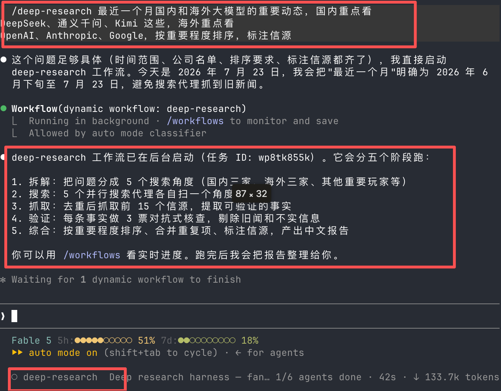
如果编排器支持可视化进度，可以在搜索阶段看到多个分支并行；分支数量、查看命令和界面属于具体实现。每个分支仍需限制来源、超时、重试和输出大小。
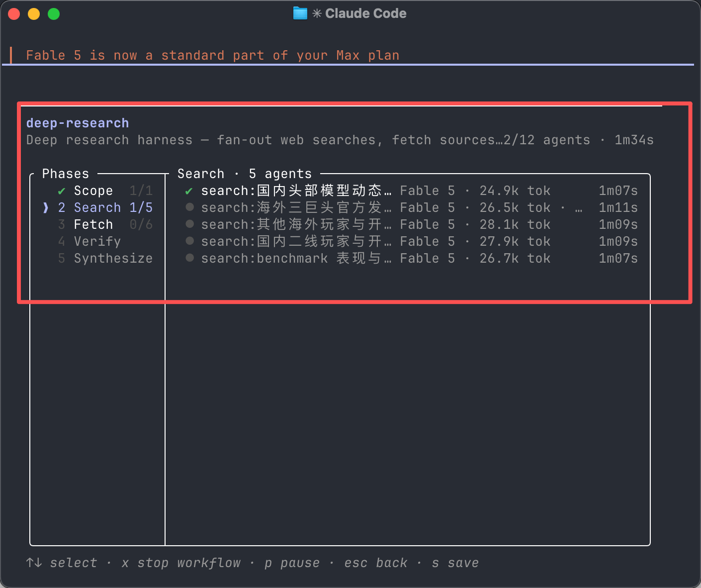
等五个阶段全跑完，它就把结果整理出来了，每条结论后面都老老实实标着信源。
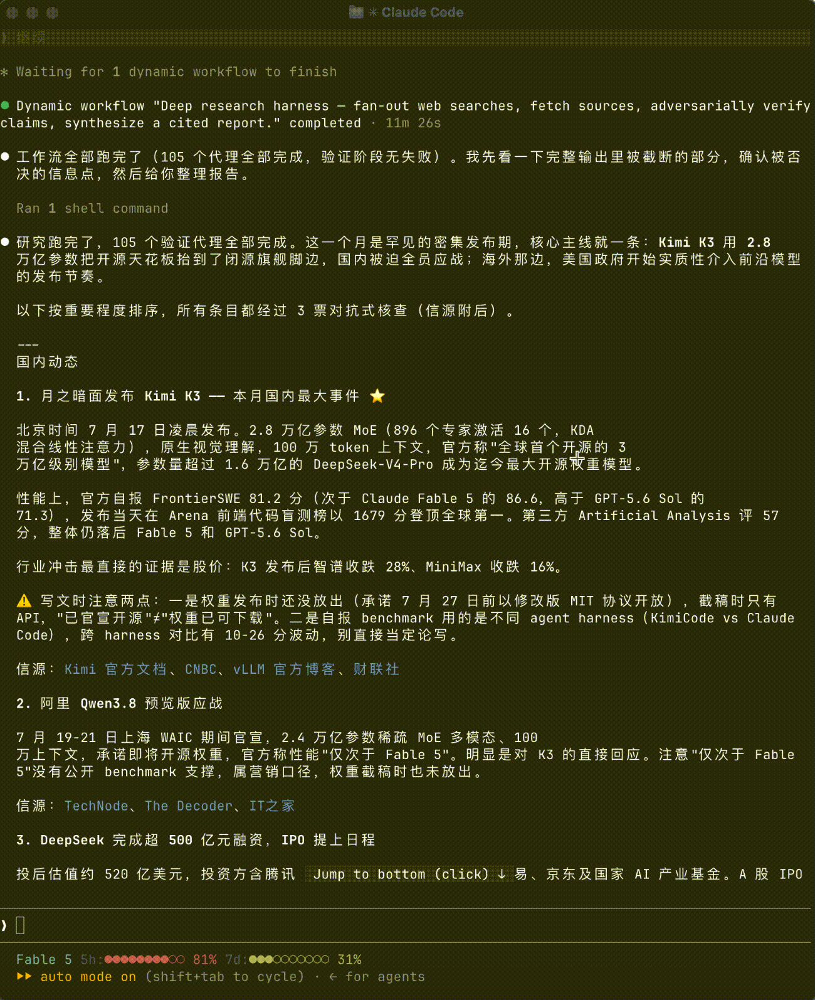
两个例子背后有一个共同点。主会话只负责拆解任务、启动 subagent、等待结果和最终汇总，不再亲自完成中间的每一个步骤。
具体的开发和搜索工作可以在隔离上下文中进行，再向主会话返回摘要、产物和证据；隔离上下文不等于隔离权限，仍需明确文件、网络、凭据和工具范围。
无论是记账网站的三个开发节点，还是 deep-research 的多个搜索节点，都能在并行执行的同时，避免主会话被大量中间过程占满。
这也是 graph 编排的一个重要价值。它不仅让任务跑得更快，也把调度过程和具体执行过程分开了。
Graph Engineering 和 LangGraph 有什么区别？
看到这估计有同学要问了，这不就是 LangGraph 干的事吗？连名字都撞上了。
从实现方式来看，确实很像。LangGraph 早就在用节点、边和状态来编排 agent 工作流，但两者并不在同一个层级。
graph engineering 是一种设计方法。它关注任务怎么拆分，哪些步骤可以并行，下一步由什么决定，状态怎么记录，失败之后怎么返工。
LangGraph 则是实现这套方法的一种框架。它提供了现成的节点、边、状态和流程控制能力，让你可以用代码把设计好的 graph 运行起来。
不过，做 graph engineering 并不一定要用 LangGraph。你也可以使用 AutoGen、Google ADK、Claude Code 的 workflow，甚至自己写一段调度代码。只要你在按照节点、边和状态来组织多个执行单元之间的协作，本质上就是在做 graph engineering。
所以，两者更准确的关系是，graph engineering 告诉你应该怎么设计，LangGraph 帮你把这个设计实现出来。
这套技术并不是最近才出现的。新的是 graph engineering 这个名字，以及大家开始把注意力从「单个 agent 怎么完成一步任务」，转向「多个 agent 怎么共同完成一条复杂流程」。
也正因为这样，这个词刚开始刷屏，LangChain 官方就发了一篇博客，说这套东西我们已经做了好几年，还顺带调侃 graph engineering 是「X 的 AI 内容工厂」刚造出来的新词。
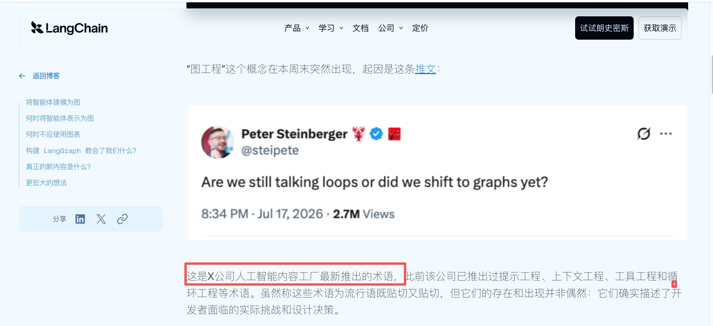
最后
聊到这里，graph engineering 其实没有那么神秘。
它做的事情，就是把一个复杂任务拆成多个职责明确的节点，再按照任务之间的依赖关系，安排它们串行执行、并行执行、条件分支和失败返工。节点负责完成任务，边负责决定下一个执行哪个节点，状态负责记录整个流程的进度和结果。
当然，不是所有任务都值得用 graph 来编排。任务很小、按照顺序就能完成的，直接交给一个 agent 跑完就行。只有当任务可以拆成多个并行分支、中间需要人工确认、执行中断后还要继续，或者需要长期追踪进度和产物时，graph 编排的价值才会真正体现出来。
真正值得关注的，也不是 graph engineering 这个新名字，而是它背后的问题。随着 agent 能完成的任务越来越复杂，我们要解决的已经不只是「这一步怎么做对」，而是「几十个步骤怎么稳定地协作起来」。
名字是新的，问题不是新的。就算过几个月 graph engineering 又被下一个新词替代，节点、边、状态和任务调度这些东西，依然不会消失。
不过按 AI 圈现在这个造词速度，我估计过不了多久，又会冒出一个听起来更厉害的新词。
到时候我再来写（快追不动啦...），哈哈。
好了，这次就聊到这，我们下期见。
参考资料：
- We Are Entering the Graph Engineering Phase：https://www.drjoshcsimmons.com/writing/we-are-entering-the-graph-engineering-phase
- 3 Years of Graph Engineering with LangGraph（LangChain 官方博客）：https://www.langchain.com/blog/3-years-of-graph-engineering-with-langgraph
- Is Graph Engineering Real?（Turing Post）：https://www.turingpost.com/p/is-graph-engineering-real-why-everyone-is-talking-about-it